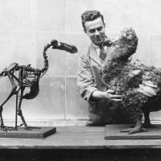

The Dodo (Raphus Cucullatus) is an extinct flightless bird that was endemic to the island of Mauritius, which is east of Madagascar in the Indian Ocean. The dodo's closest genetic relative was the also-extinct Rodrigues solitaire. The two formed the subfamily Raphinae, a clade of extinct flightless birds that were a part of the family including pigeons and doves. The closest living relative of the dodo is the Nicobar pigeon. A white dodo was once thought to have existed on the nearby island of Réunion, but it is now believed that this assumption was merely confusion based on the also-extinct Réunion ibis and paintings of white dodos.
Subfossil remains show the dodo was about 1 metre (3 ft 3 in) tall and may have weighed 10.6–17.5 kg (23–39 lb) in the wild. The dodo's appearance in life is evidenced only by drawings, paintings, and written accounts from the 17th century. Since these portraits vary considerably, and since only some of the illustrations are known to have been drawn from live specimens, the dodos' exact appearance in life remains unresolved, and little is known about its behaviour. It has been depicted with brownish-grey plumage, yellow feet, a tuft of tail feathers, a grey, naked head, and a black, yellow, and green beak. It used gizzard stones to help digest its food, which is thought to have included fruits, and its main habitat is believed to have been the woods in the drier coastal areas of Mauritius. One account states its clutch consisted of a single egg. It is presumed that the dodo became flightless because of the ready availability of abundant food sources and a relative absence of predators on Mauritius. Though the dodo has historically been portrayed as being fat and clumsy, it is now thought to have been well-adapted for its ecosystem.
The first recorded mention of the dodo was by Dutch sailors in 1598. In the following years, the bird was hunted by sailors and invasive species, while its habitat was being destroyed. The last widely accepted sighting of a dodo was in 1662. Its extinction was not immediately noticed, and some considered it to be a myth. In the 19th century, research was conducted on a small quantity of remains of four specimens that had been brought to Europe in the early 17th century. Among these is a dried head, the only soft tissue of the dodo that remains today. Since then, a large amount of subfossil material has been collected on Mauritius, mostly from the Mare aux Songes swamp. The extinction of the dodo within less than a century of its discovery called attention to the previously unrecognised problem of human involvement in the disappearance of entire species. The dodo achieved widespread recognition from its role in the story of Alice's Adventures in Wonderland, and it has since become a fixture in popular culture, often as a symbol of extinction and obsolescence.
As no complete dodo specimens exist, its external appearance, such as plumage and colouration, is hard to determine. Illustrations and written accounts of encounters with the dodo between its discovery and its extinction (1598–1662) are the primary evidence for its external appearance. According to most representations, the dodo had greyish or brownish plumage, with lighter primary feathers and a tuft of curly light feathers high on its rear end. The head was grey and naked, the beak green, black and yellow, and the legs were stout and yellowish, with black claws. A study of the few remaining feathers on the Oxford specimen head showed that they were pennaceous rather than plumaceous (downy) and most similar to those of other pigeons.
Subfossil remains and remnants of the birds that were brought to Europe in the 17th century show that dodos were very large birds, up to 1 m (3 ft 3 in) tall. The bird was sexually dimorphic; males were larger and had proportionally longer beaks. Weight estimates have varied from study to study. In 1993, Bradley C. Livezey proposed that males would have weighed 21 kilograms (46 lb) and females 17 kilograms (37 lb). Also in 1993, Andrew C. Kitchener attributed a high contemporary weight estimate and the roundness of dodos depicted in Europe to these birds having been overfed in captivity; weights in the wild were estimated to have been in the range of 10.6–17.5 kg (23–39 lb), and fattened birds could have weighed 21.7–27.8 kg (48–61 lb). A 2011 estimate by Angst and colleagues gave an average weight as low as 10.2 kg (22 lb). This has also been questioned, and there is still controversy over weight estimates. A 2016 study estimated the weight at 10.6 to 14.3 kg (23 to 32 lb), based on CT scans of composite skeletons. It has also been suggested that the weight depended on the season, and that individuals were fat during cool seasons, but less so during hot.
The skull of the dodo differed much from those of other pigeons, especially in being more robust, the bill having a hooked tip, and in having a short cranium compared to the jaws. The upper bill was nearly twice as long as the cranium, which was short compared to those of its closest pigeon relatives. The openings of the bony nostrils were elongated along the length of the beak, and they contained no bony septum. The cranium (excluding the beak) was wider than it was long, and the frontal bone formed a dome-shape, with the highest point above the hind part of the eye sockets. The skull sloped downwards at the back. The eye sockets occupied much of the hind part of the skull. The sclerotic rings inside the eye were formed by eleven ossicles (small bones), similar to the amount in other pigeons. The mandible was slightly curved, and each half had a single fenestra (opening), as in other pigeons.
Little is known of the behaviour of the dodo, as most contemporary descriptions are very brief. Based on weight estimates, it has been suggested the male could reach the age of 21, and the female 17. Studies of the cantilever strength of its leg bones indicate that it could run quite fast. The legs were robust and strong to support the bulk of the bird, and also made it agile and manoeuvrable in the dense, pre-human landscape. Though the wings were small, well-developed muscle scars on the bones show that they were not completely vestigial, and may have been used for display behaviour and balance; extant pigeons also use their wings for such purposes. Unlike the Rodrigues solitaire, there is no evidence that the dodo used its wings in intraspecific combat. Though some dodo bones have been found with healed fractures, it had weak pectoral muscles and more reduced wings in comparison. The dodo may instead have used its large, hooked beak in territorial disputes. Since Mauritius receives more rainfall and has less seasonal variation than Rodrigues, which would have affected the availability of resources on the island, the dodo would have less reason to evolve aggressive territorial behaviour. The Rodrigues solitaire was therefore probably the more aggressive of the two. In 2016, the first 3D endocast was made from the brain of the dodo; the brain-to-body-size ratio was similar to that of modern pigeons, indicating that dodos were probably equal in intelligence.
The preferred habitat of the dodo is unknown, but old descriptions suggest that it inhabited the woods on the drier coastal areas of south and west Mauritius. This view is supported by the fact that the Mare aux Songes swamp, where most dodo remains have been excavated, is close to the sea in south-eastern Mauritius. Such a limited distribution across the island could well have contributed to its extinction. A 1601 map from the Gelderland journal shows a small island off the coast of Mauritius where dodos were caught. Julian Hume has suggested this island was l'île aux Benitiers in Tamarin Bay, on the west coast of Mauritius. Subfossil bones have also been found inside caves in highland areas, indicating that it once occurred on mountains. Work at the Mare aux Songes swamp has shown that its habitat was dominated by tambalacoque and Pandanus trees and endemic palms. The near-coastal placement and wetness of the Mare aux Songes led to a high diversity of plant species, whereas the surrounding areas were drier.
Like many animals that evolved in isolation from significant predators, the dodo was entirely fearless of humans. This fearlessness and its inability to fly made the dodo easy prey for sailors. Although some scattered reports describe mass killings of dodos for ships' provisions, archaeological investigations have found scant evidence of human predation. Bones of at least two dodos were found in caves at Baie du Cap that sheltered fugitive slaves and convicts in the 17th century, which would not have been easily accessible to dodos because of the high, broken terrain. The human population on Mauritius (an area of 1,860 km2 or 720 sq mi) never exceeded 50 people in the 17th century, but they introduced other animals, including dogs, pigs, cats, rats, and crab-eating macaques, which plundered dodo nests and competed for the limited food resources. At the same time, humans destroyed the forest habitat of the dodos. The impact of the introduced animals on the dodo population, especially the pigs and macaques, is today considered more severe than that of hunting. Rats were perhaps not much of a threat to the nests, since dodos would have been used to dealing with local land crabs.
It has been suggested that the dodo may already have been rare or localised before the arrival of humans on Mauritius, since it would have been unlikely to become extinct so rapidly if it had occupied all the remote areas of the island. A 2005 expedition found subfossil remains of dodos and other animals killed by a flash flood. Such mass mortalities would have further jeopardised a species already in danger of becoming extinct.[95] Yet the fact that the dodo survived hundreds of years of volcanic activity and climatic changes shows the bird was resilient within its ecosystem.
Some controversy surrounds the date of its extinction. The last widely accepted record of a dodo sighting is the 1662 report by shipwrecked mariner Volkert Evertsz of the Dutch ship Arnhem, who described birds caught on a small islet off Mauritius, now suggested to be Amber Island:
These animals on our coming up to them stared at us and remained quiet where they stand, not knowing whether they had wings to fly away or legs to run off, and suffering us to approach them as close as we pleased. Amongst these birds were those which in India they call Dod-aersen (being a kind of very big goose); these birds are unable to fly, and instead of wings, they merely have a few small pins, yet they can run very swiftly. We drove them together into one place in such a manner that we could catch them with our hands, and when we held one of them by its leg, and that upon this it made a great noise, the others all on a sudden came running as fast as they could to its assistance, and by which they were caught and made prisoners also.
Even though the rareness of the dodo was reported already in the 17th century, its extinction was not recognised until the 19th century. This was partly because, for religious reasons, extinction was not believed possible until later proved so by Georges Cuvier, and partly because many scientists doubted that the dodo had ever existed. It seemed altogether too strange a creature, and many believed it a myth. The bird was first used as an example of human-induced extinction in Penny Magazine in 1833, and has since been referred to as an "icon" of extinction.
The dodo's significance as one of the best-known extinct animals and its singular appearance led to its use in literature and popular culture as a symbol of an outdated concept or object, as in the expression "dead as a dodo," which has come to mean unquestionably dead or obsolete. Similarly, the phrase "to go the way of the dodo" means to become extinct or obsolete, to fall out of common usage or practice, or to become a thing of the past. "Dodo" is also a slang term for a stupid, dull-witted person, as it was supposedly stupid and easily caught.
The dodo bird appears in movies and television shows such as: